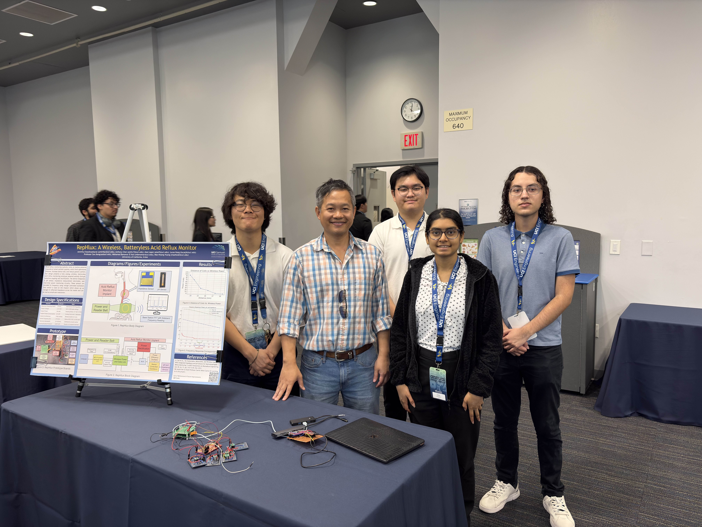
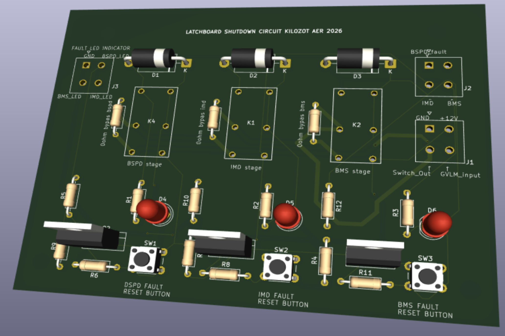
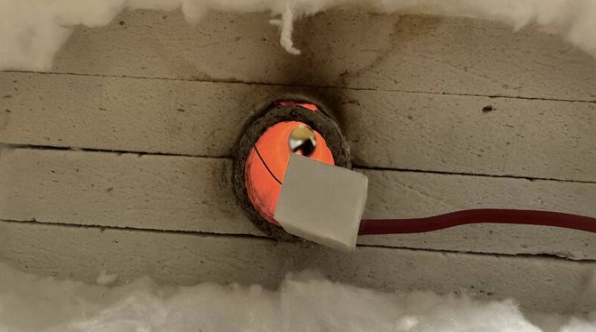

Hardware-focused work spanning PCB design, embedded systems, RF & inductive power, and instrumentation. All projects designed, built, and validated from scratch.
RepHlux is a wireless, batteryless acid reflux monitor — an analog implant powered entirely through inductive coupling at 215 kHz, with no battery or wired connection. I designed the power rectification circuit and batteryless telemetry architecture as part of a four-person senior design team.
pH and impedance readings are encoded as frequency shifts via VCO-based sensor oscillators, which switch a modulation load on the implant. This appears as AM sideband reflected impedance at the external reader belt, enabling passive data transmission at 10–80 kHz sidebands around the 215 kHz carrier — decoded by FFT on the reader DSP.

The FSAE EV.7 Shutdown Circuit is a series interlock loop — any one of eight independent fault sources can open the loop and kill the tractive system. This project covers two of those segments: the Latchboard PCB and the BSPD comparator circuit, both designed from scratch.
The latchboard implements three independent self-latching relay stages (BMS, IMD, BSPD). Once any stage trips, the relay latches open regardless of driver input and requires a person to physically reset it at the vehicle — satisfying EV.7.2.3. The BSPD comparator detects simultaneous hard brake and throttle, flagging sensor failure or stuck pedal per EV.7.7.

A low-cost programmable alumina-tube furnace for semiconductor oxidation, built to give students access to fabrication-grade thermal processing without commercial equipment costs. The furnace reaches 1200°C with PID-controlled temperature ramp and hold.
Designed the PID temperature control PCB around an ATmega8A MCU with K-type thermocouple feedback, driving a HV heating element through a solid-state relay. HV isolation achieved with alumina ceramic tube, SSR, and high-current fuse. Silicon wafer oxidation verified under microscope. Delivered under $500 versus $3,000+ commercial alternatives.

Chordinates is a novel musical instrument that maps real-time 3D position data — captured via ultra-wideband ranging — to synthesis parameters in Max/MSP. Four fixed UWB anchors and two mobile tags provide continuous XYZ coordinates at ~100 ms latency.
Firmware implements DS-TWR (double-sided two-way ranging) on DWM3000 modules driven by ESP32, with Kalman filtering to smooth position estimates. XYZ coordinates are mapped to pitch, spatialization, and modulation. Selected as a top-8 E-SONIC proposal and awarded $1,500 in development funding.